CYCLING
Powered by Harder Mechanical Contractors
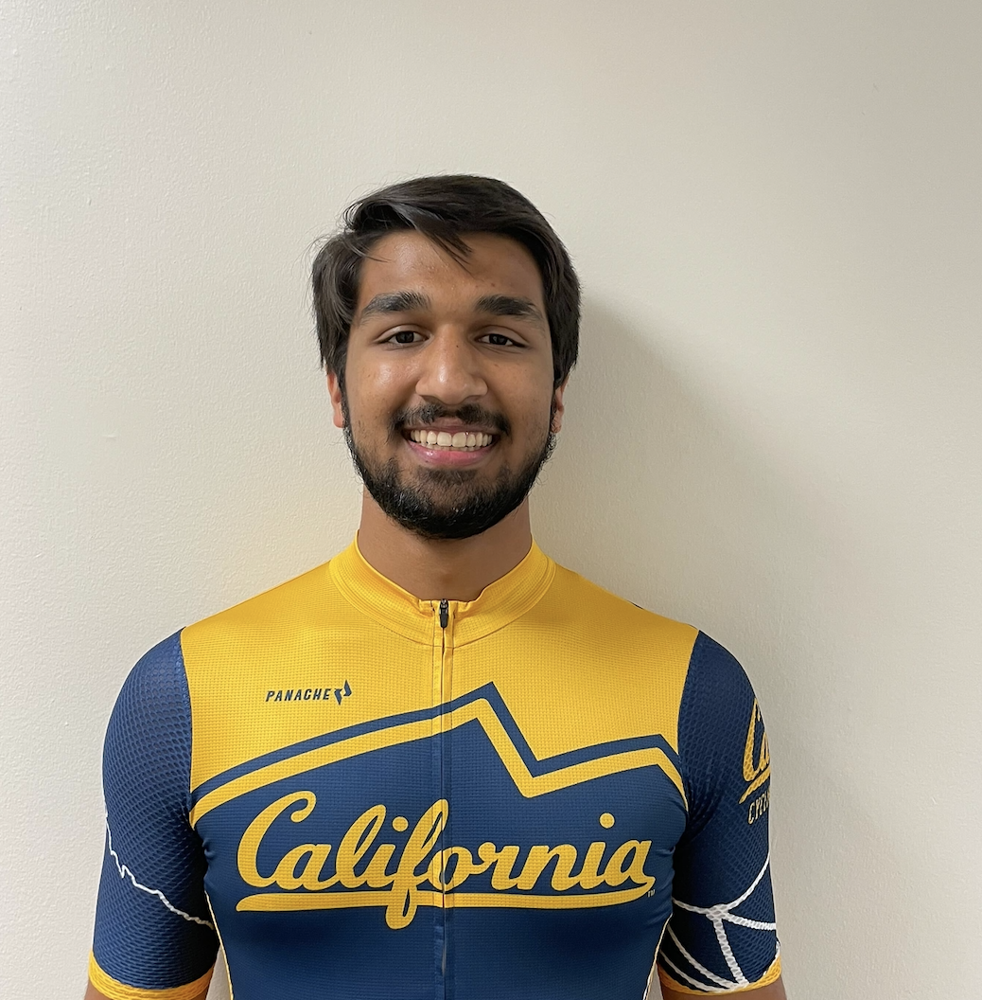
Rishi Desai
Road President
Rishi started cycling as a weekend warrior, but like a lot of us, caught the racing bug pretty early on. Primarily a criterium racer, he took up cycling with a local team in his hometown of Greenville, South Carolina during the pandemic.
Above all, he just likes doing everything fast - whether it's sprinting to the finish of a crit, or flying through the countryside on the bike.
Rishi’s biggest accolades are in criterium racing and time trialing - winning a host of local titles in the southeast USA. Outside of Cal Cycling, he races with Supra Performance Cycling, and also enjoys other go fast hobbies including skiing and Motorsport.
Sophomore, Physics and Computer Science.
Email: road@calcycling.edu
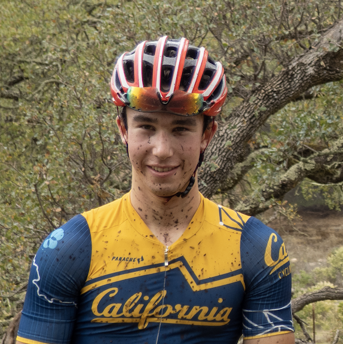
Alex Mordaunt
MTB President
Alex has been racing bikes competitively for 7 years now. He started with his local cross country high-school team out of Santa Cruz. Alex placed 2nd overall in California and went to USACycling nationals for XC. He competes in XC, Enduro, and Downhill with notable finishes including first in WCCC men's SuperD and sixth at the Tahoe Trail 100 cat 1 XC. When asked skiing or snowboarding, it's snowboarding all the way.
Junior, Physics and Environmental Science
Email: mtb@cycling.berkeley.edu
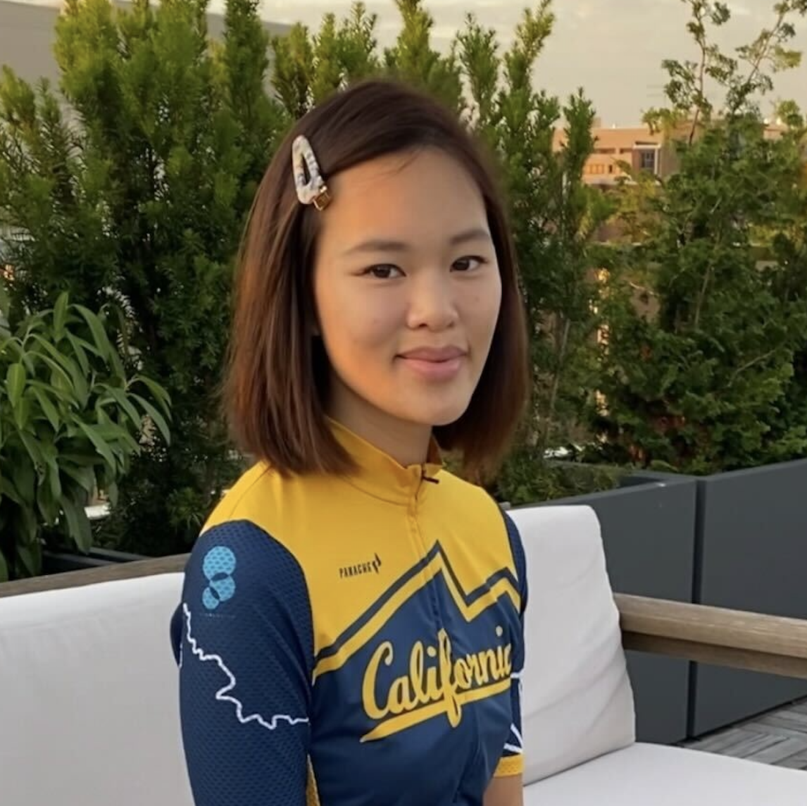
Crystal Haryanto
Operations Director
Crystal traded her ballerina shoes to clipless pedals in her second semester. Having done philanthropy work since she was a dancer, she continues to bring positive impacts through her cycling platform. She’s featured in World Bicycle Relief’s Women on Wheels 2022, a campaign to mobilize women and girls in global communities. Supporting the first HBCU cycling team in the country, she participated in and won three USAC-permitted Saint Augustine University Collegiate Virtual Cycling Race Fall 2020. She also podiumed in the Berkeley Hills Road Race Spring 2022. When the snow starts to fall, you’ll find her hitting the slopes of her favorite mountains.
Senior, Economics, Cognitive Science, minor in Public Policy
Email: operations@cycling.berkeley.edu
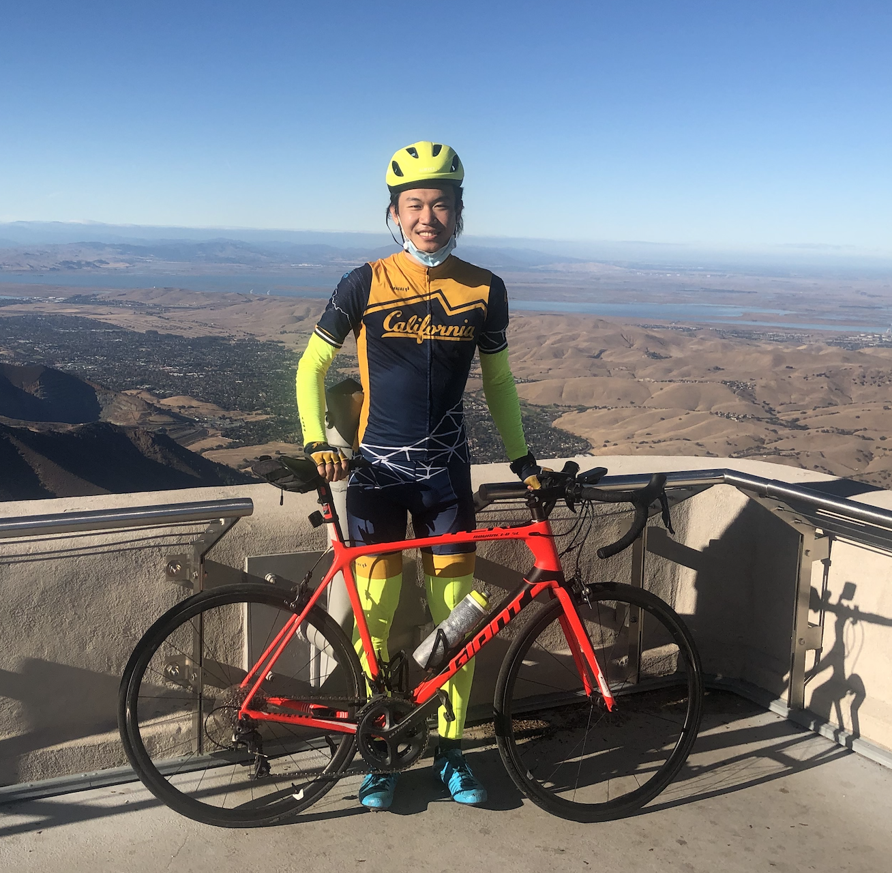
Han Zhang
Road Racing Team Director
Han is a proud member of the pandemic bike boom. He started cycling in August 2020 to find something else to do while listening to podcasts, and now he doesn’t listen to podcasts on the bike anymore because his airpods are not aero enough. Despite being a new cyclist, he loves exploring new routes around the bay(to hunt for obscure KOMs, of course), and trains extremely hard to finish middle of the pack in local Cat 5 races.
Master of Engineering Student
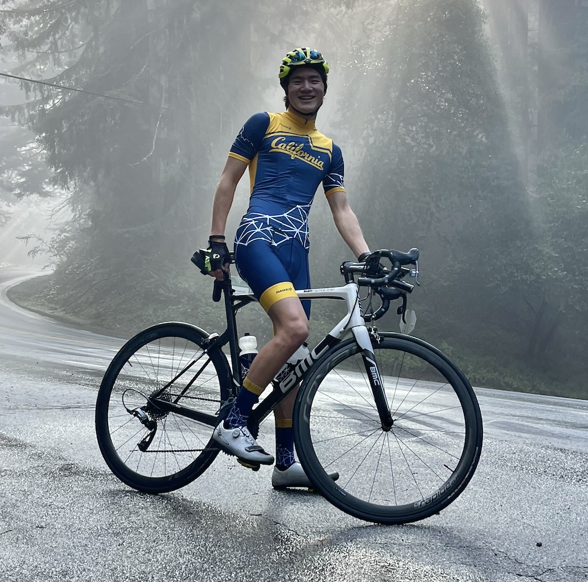
Zachary Liu
Road Sport Director
Zach joined Cal Cycling at the beginning of freshman year and got immediately dropped on his first ride. Now he’s a tiny bit stronger so he doesn’t get dropped as much. He’s also a tech geek when it comes to bikes, working as a bike mechanic at Mike’s Bikes and always nerding out over obscure pieces of new tech
Sophomore
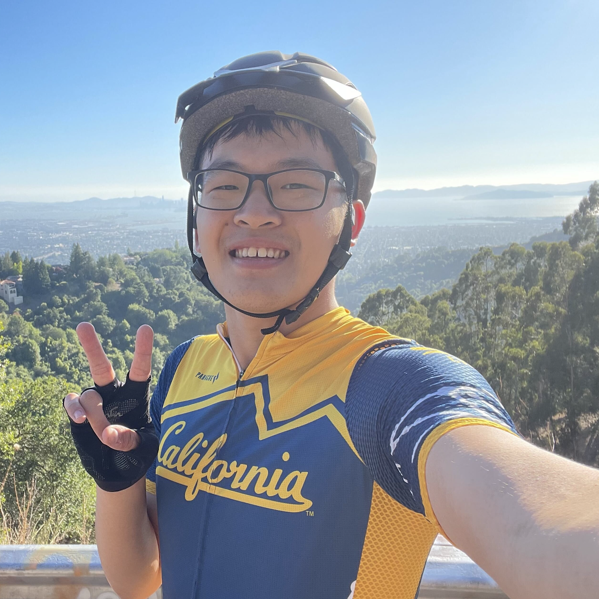
Bryan Kao
Road Home Race Director
Bryan has been riding as a “weekend warrior” since his early youth with his family in Taiwan, but decided to commit to more structured training after joining Cal Cycling his freshman year. Off the bike, Bryan studies transportation engineering, part of which involves planning and designing bicycle infrastructure; therefore, one often finds him geeking out about the roads he rides on.
Senior, Civil & Environmental Engineering
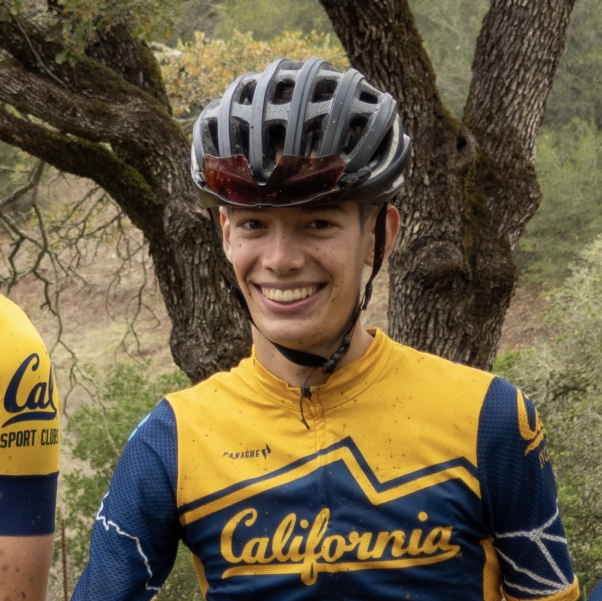
Justin Peck
MTB Racing Team Director
Justin loves riding and racing cross country mountain bikes. He learned to ride a bike at age 2 and grew up cycling with his family and friends. He first started racing cyclocross before participating in NICA on the local high school team. He found his passion in cross country mountain biking, and now races competitively in the US Pro XCT and other events across the country. When he's not riding his bike, Justin loves all other outdoor activities, including hiking, skiing, and surfing.
Sophomore, Mechanical Engineering
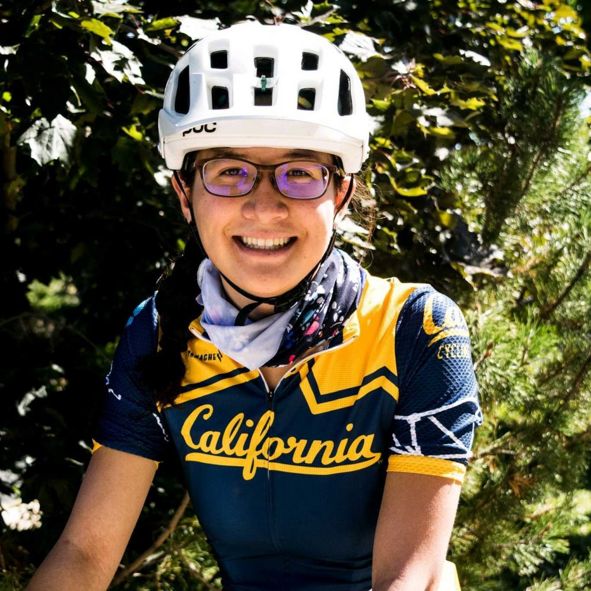
Alyssa Feinberg
MTB Sport Director
Alyssa joined Cal Cycling as a freshman in her first semester. As a mountain biker she has always ridden with her family on annual trips to the desert but began riding seriously in middle school after joining her town’s local teams. She has raced all four years in high school as well as in races around Colorado. Outside of racing Alyssa has coached young riders through groups like Little Bella’s and Pedaling Minds. Alyssa is excited for more years of racing and riding in Berkeley with Cal Cycling!
Senior, Molecular and Environmental Biology
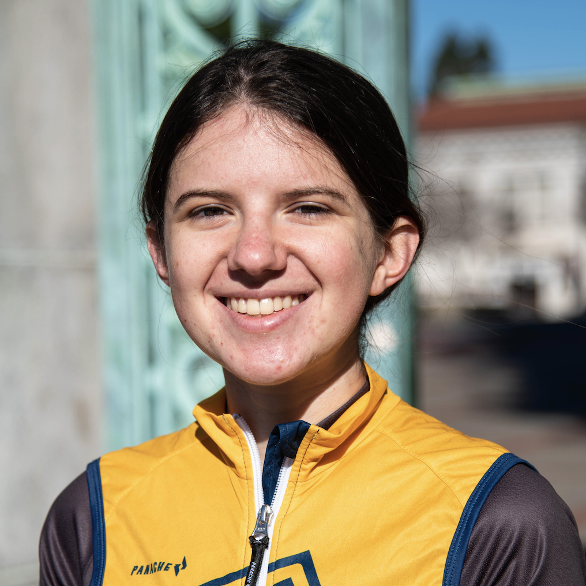
Laura Treers
MTB Home Race Director
Laura builds robots and studies dynamics and bio-inspired design. When she’s not in lab she’s probably on her bike or on some hiking or skiing adventure, and is a huge nerd for maps and exploring new routes. She got hooked on road cycling during her sophomore year of undergrad and soon afterwards got her first mountain bike and started racing XC. While she continues to love riding the road, her main race focus has switched to XC mtb, and generally endurance off-road events.
Ph.D. Candidate, Mechanical Engineering
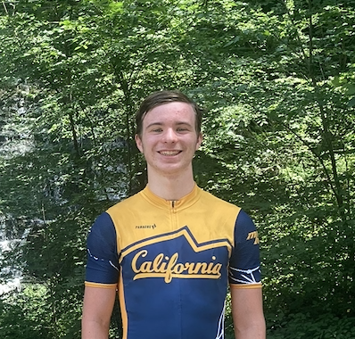
Xavier Plourde
Technial Captain
Xavier has been cycling since he was very young, but started riding more regularly in 2020. He is a road cyclist, and enjoys going on long endurance rides, as well as planning out and exploring new routes. Off the bike, Xavier enjoys competitive programming, skiing, playing the piano and saxophone, and working on coding projects, like the website you're looking at right now.
Sophomore, Computer Science
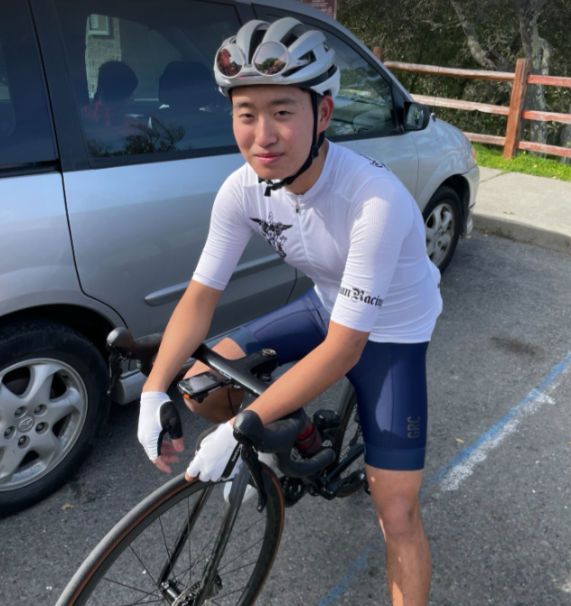
Ricky Han
Clothing Captain
Ricky started road cycling during the pandemic and joined Cal Cycling in 2021. He is in charge of making sure we all shine with all of our team kits and accessories. He has a strong interest in Industrial Design, but if you have any mechanical problems on your bike, he can also help!
Senior, Mechanical Engineering
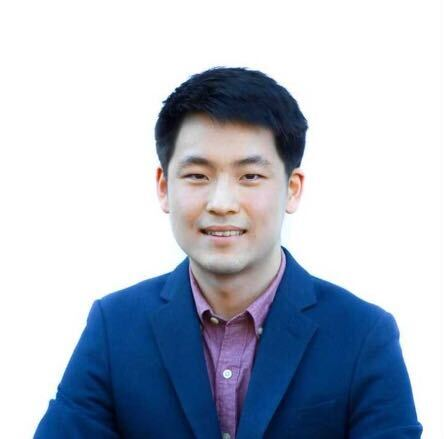
Jason Park
Health & Safety Captain
Jason started biking seriously in high school and has cranked out miles since, though he likes building bikes more than riding them. Road bikes are his favorite, but he also enjoys mountain bikes when the moment calls.
Senior, Civil Engineering
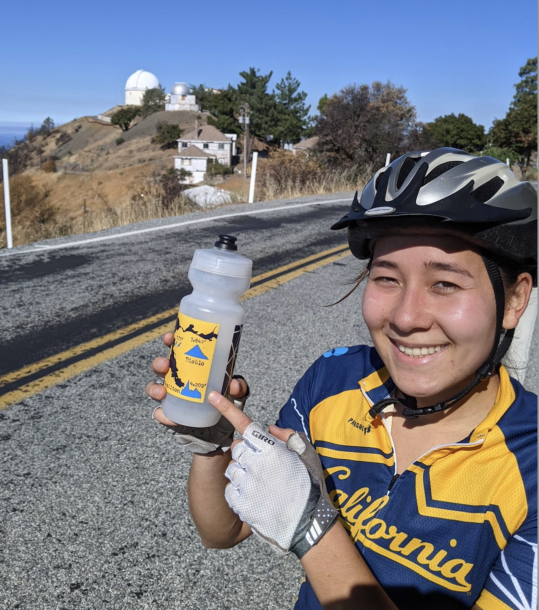
Noelle Davis
Media Captain
Noelle started riding her bike around LA in 2020 while recovering from a soccer injury. One day, she hit a bump, busted her front wheel, and had to befriend some cyclists. Now, she owns a number of bicycles that is too many but also somehow not enough… Her favorite parts of the sport are the friends, views, and adrenaline, and also Calvin Jones. Due to a series of unfortunate events, she hasn’t had the opportunity to try racing yet, but is planning to enter XC events next year.
Ph.D. Student, Electrical Engineering and Computer Sciences

Max Vink
PR Captain
Max was indoctrinated into cycling by his Dutch parentage at a young age, and though he eventually learned to ride without wooden shoes, he still grumbles about hills and why they exist. When he’s not on the bike hunting KOMs with funny names, you can find him scouring the secondhand market for cheap parts, eating his weight in tortilla chips, or over analyzing Christoper Nolan movies
Junior, Political Science and Computer Science